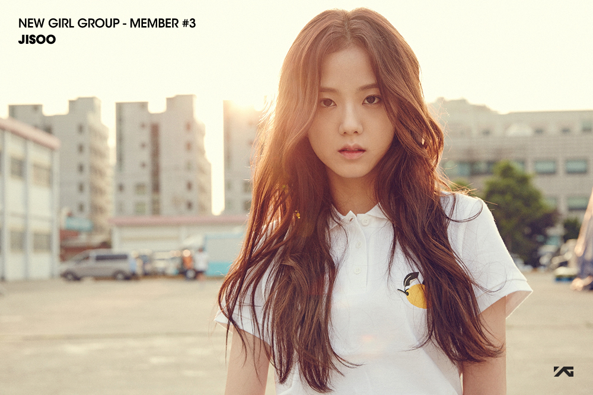
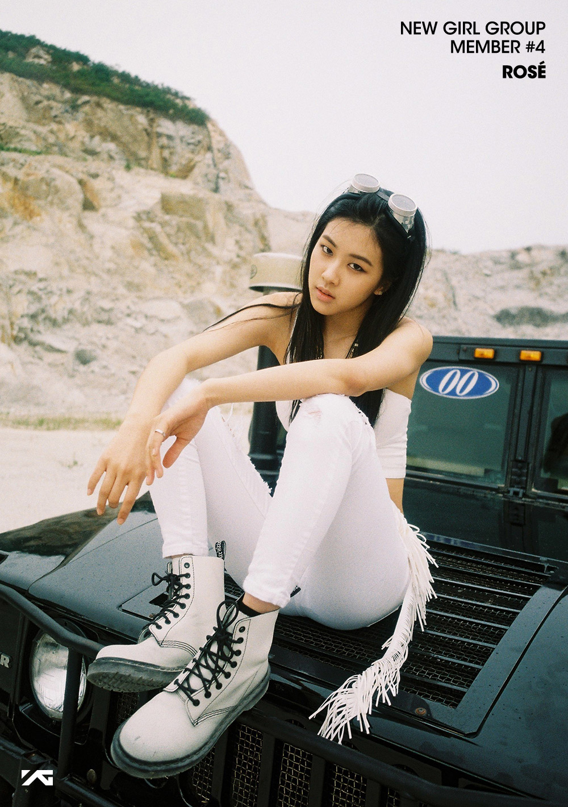

Stage Name: Lisa
Birth Name: Lalisa Manoban (ลลิสา มโนบาล)
Pranpriya Manoban (ปราณปริยา มโนบาล)
Nicknames: Lalice, Laliz, Pokpak
Position: Main Dancer, Lead Rapper, Maknae
Birthday: March 27, 1997
Zodiac Sign: Aries
Birthplace: Bangkok, Thailand
Height: 167cm (5’6”)
Weight: 46 kg (101 lbs)
Blood Type: O

Stage Name: Jisoo (지수)
Birth Name: Kim Ji Soo (김지수)
Nickames: Chi Choo, Jichu
Position: Lead Vocalist, Visual
Birthday: January 3, 1995
Zodiac Sign: Capricorn
Birthplace: Seoul, South Korea
Height: 162cm (5’3”)
Weight: 45 kg (99 lbs)
Blood Type: A

Stage Name: ROSÉ
Birth Name: Park Chae Young (박채영)
English Name: Roseanne Park
Nickname: Rose, Rosie, “Pasta”
Position: Main Vocalist
Birthday: February 11, 1997
Zodiac Sign: Aquarius
Birthplace: New Zealand
Height: 168cm (5’6”)
Weight: 45 kg (99 lbs)
Blood Type: B
® BLACKPINK
If you want some updates about BLACKPINK, take a look at
BLACKPINK'S OFFICIAL INSTRAGRAM!